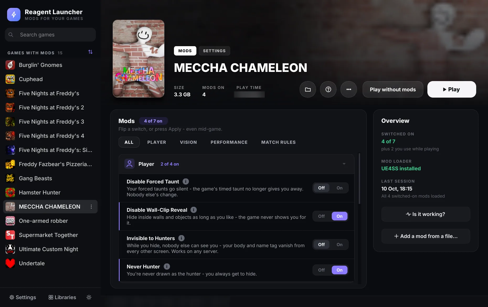
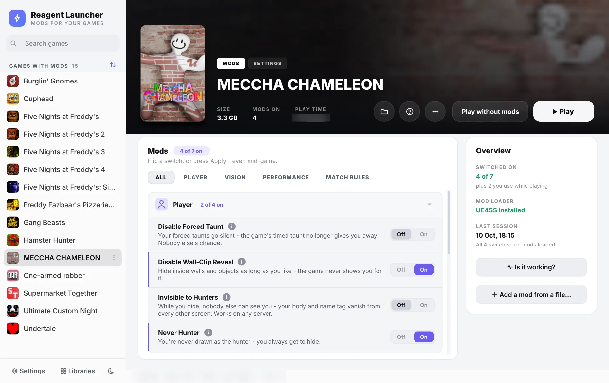

- Plague Inc: Evolved: 9 new mods - Add DNA Points, Unlimited DNA Points, Free Unlocks (every gene, transmission, symptom and ability), Disable Research, Fast Infection, Open Borders, Open Airports, Open Seaports and Win Game. Single-player; achievements and unlocks still count.
1.0.26Plague Inc
Flip a switch.
Flip a switch.
Press Play.
Reagent Launcher finds your Steam, Epic Games and Xbox games and gives each one its mods as Off/On switches. No copying files or editing configs. The launcher sets up the mod loader, places the files and tidies up after.
- Mods
- 100+
- Games
- 22
- Size
- 63.2 MB


Invisible to Hunters is on
MECCHA CHAMELEONTry the switch
Invisible to Hunters
While you hide, nobody else can see you. Works on any server.
How it works
From download to a modded game in three steps
-
1
Download and unzip
Unzip it into a folder you own, like Documents, and run Reagent Launcher.exe. There's no installer.
-
2
Pick a game
Your Steam, Epic Games and Xbox app games show up by themselves, and a filter shows only the ones with mods.
-
3
Flip a switch, press Play
The launcher sets up the mod loader and the mod for you. Many switches work even while the game is running.
Supported games
22 games, A to Z
Every game Reagent Launcher has mods for. Pick one to see its mods.
- Buckshot Roulette2 mods
- Burglin' Gnomes9 mods
- Clustertruck6 mods
- Content Warning13 mods
- Cuphead11 mods
- Five Nights at Freddy's6 mods
- Five Nights at Freddy's 28 mods
- Five Nights at Freddy's 38 mods
- Five Nights at Freddy's 45 mods
- Five Nights at Freddy's: Sister Location7 mods
- Freddy Fazbear's Pizzeria Simulator21 mods
- Gang Beasts3 mods
- Hamster Hunter7 mods
- MECCHA CHAMELEON9 mods
- One-armed robber4 mods
- PEAK22 mods
- Plague Inc: Evolved9 mods
- R.E.P.O.17 mods
- Side Effects8 mods
- Supermarket Together7 mods
- Ultimate Custom Night9 mods
- Undertale6 mods
Mod library
100+ mods for 22 games
Every mod in the launcher today. Multiplayer mods say where they work, so you know before you join a friend's lobby.
Any lobbyyours or a friend's
Best as hostall of it when you host, part of it as a guest
Host or soloyour own game only
Use while playingset an amount or press Apply in-game
What it handles
The fiddly parts of modding, done for you
Switches, not installs
Every mod is an Off/On switch. Placing files, backing up what they replace and cleaning up all happen behind the scenes.
Your game folders stay clean
Mods live in the launcher's own folder. Switch one off and the game goes back to how it was.
Mod loaders set up for you
MelonLoader, BepInEx, UE4SS and Reagent Loader are installed the first time a mod needs one, along with any Microsoft runtime they need.
Made for playing with friends
Multiplayer mods say where they work. Most MECCHA CHAMELEON mods work on a friend's server even when they don't have Reagent.
"Is it working?" in one click
See whether the mod loader started, which mods loaded last time, and which one crashed the game if one did.
Updates itself
New mods arrive with launcher updates. It checks when it starts, and an update that fails is rolled back.
Download
Reagent Launcher 1.0.26
- Released
- 16 Oct 2026
- Size
- 63.2 MB
- Needs
- Windows 10 or 11
- Price
- Free
Downloads from GitHub. Once installed, the launcher updates itself.
Installing
-
Unzip it
Put the
Reagent Launcherfolder somewhere you own, like Documents or the Desktop. Not in Program Files, or it can't update itself. -
Run it
Open
Reagent Launcher.exe. If Windows says "Windows protected your PC", click More info, then Run anyway. The launcher isn't code-signed yet, so Windows doesn't recognise it. -
Pick a game
Choose a game with mods in the sidebar, flip the switches you want and press Play.
Questions
FAQ
Is it free?
Yes. There's no account to make and there are no ads.
Do my friends need Reagent Launcher too?
Check the label on the mod. Any lobby mods work whether you host or join, even when the host doesn't have Reagent. Best as host mods do everything on your own server and part of it on a friend's; they do the rest there when the host has Reagent too. Host or solo mods only work in your own game.
Can I get banned for using mods?
Games protected by Easy Anti-Cheat or BattlEye can ban accounts caught with modified files. The launcher looks for both and warns you on the game's page, and it never touches them.
Use mods on your own, or with friends who know you're using them. Don't use them in public matches.
Does it work with PC Game Pass?
Your Xbox app games, including PC Game Pass, show up in the launcher and start through the Xbox app. Mods that need a script loader such as UE4SS aren't added to Xbox copies, because those loaders crash them at start.
How do I remove a mod, or the launcher?
Switch the mod off. Its files leave the game folder and anything it replaced is put back.
To remove the launcher, switch your mods off, close it and delete its folder. Its settings are in %LOCALAPPDATA%\Reagent_Launcher.
How does updating work?
Each time it starts, the launcher checks for a new version and offers to install it. It swaps itself out safely and rolls back if anything goes wrong. Your settings and mods carry over.
Can I use Chromium with Thunderstore?
Yes. Chromium, the MECCHA CHAMELEON frame-rate mod, is also on Thunderstore, so it works with r2modman and other mod managers.
Changelog